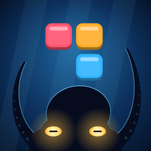

Deep Drop
A relaxing block puzzle by Tidewater Games
Clear lines, hold back the rising tide and dive through six ocean zones, from the Sunlit Shallows down to the Kraken's Lair.
Contact us
Questions, a bug, or an idea for the game? Email us and we'll get back to you, usually within a few days.
It helps to mention your phone model and what you were doing when the problem happened.
Common questions
Where is my progress saved?
On your phone. Your best score, deepest dive, settings and any game in progress are saved automatically after every move. Deleting the app deletes this progress.
Do I need an internet connection?
No. Deep Drop plays fully offline. On iPhone, scores you set while offline are posted to the leaderboards the next time you open the game with a connection.
How do the leaderboards work?
On iPhone, if you're signed in to Game Center, your high score and deepest dive are posted to the Game Center leaderboards automatically. Tap Leaderboards on the title screen to see them. You can sign in or out of Game Center in your iPhone's Settings app.
How does the tide work?
Every few moves the water rises and floods the bottom row, and you can't place pieces underwater. Each line you clear lowers the water by one row. Calm, Standard and Rough Seas change how often it rises.
Can I see the tutorial again?
Yes. Open Settings from the title screen or the pause menu and tap Replay tutorial.
The game feels slow on my older phone.
Turn on Reduce effects in Settings. It switches off some of the moving light and sea life, which also helps if you're sensitive to motion.
How do I turn off sound or vibration?
Open Settings and switch off Sound effects, Music or Vibration. The music note button on the game screen mutes everything at once.